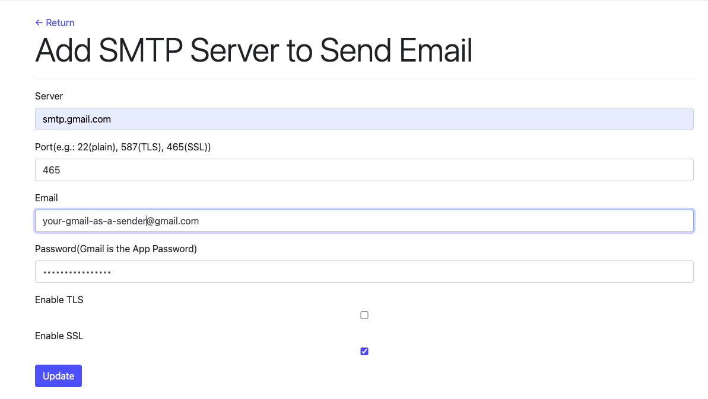

The SMTP server will be used to send e-mail. For example, send one-time temporary password to one e-mail address if the IT admin forgets his web login password.
If this page is not set, then it will be a local SMTP server by default.
Server: SMTP server URL or IP address, e.g. smtp.gmail.com or the company's SMTP URL
Port: By default, 25 is for plain connection, 587 for TLS, 465 for SSL
Email: The sender e-mail, which will be seen in one e-mail as the "From".
Password: Normally, it is the password that login the e-mail account. But Gmail needs to create the App password for it.
Enable TLS: TLS connection to transmit the e-mail. e.g. If it enables for Gmail, then the Port will use 587.
Enable SSL: SSL connection to transmit the e-mail, e.g. If it enables for Gmail, then the Port will use 465.
Only one of TLS or SSL can be enabled. If both are enabled, then the default will use TLS. If both options are off, then it uses the plain connection.
Here is one setting example for Gmail:
1. Go to gmail to turn on 2 step verifiation: https://myaccount.google.com --> "security" --> "2 step verification"--> On
2. Turn on the "App Passwords": https://myaccount.google.com --> "security" --> "App Passwords" --> Add App Name to generate an App Password
3. Configure VPC Edge:
